Джейсон Дюваль в GTA 6
Главный герой · Обновлено:
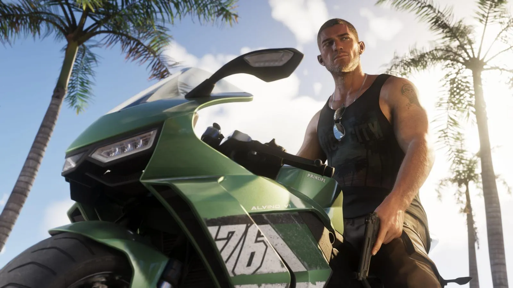
Джейсон Дюваль — один из двух главных героев GTA 6 и напарник Лусии Каминос. Rockstar описывает его одной фразой: «Джейсон хочет лёгкой жизни, но всё становится только сложнее».
- Один из двух главных героев GTA 6: за него можно играть, как и за Лусию.
- Вырос среди мошенников и мелких преступников.
- После армии оказался во Флорида-Кис (в игре — Leonida Keys) и работает на местных наркокурьеров.
- Живёт бесплатно в доме контрабандиста Брайана Хедера — в обмен на помощь с «делами».
- Друг — Кэл Хэмптон, тоже человек Брайана.
- Встреча с Лусией, по словам Rockstar, может стать лучшим — или худшим, что с ним случалось.
Кто это: официальное описание
По официальному описанию Rockstar, Джейсон вырос в окружении мошенников и жуликов. Чтобы уйти от неспокойной юности, он отслужил в армии — но после службы снова оказался там, откуда пытался вырваться: в Кис, где делает то, что умеет лучше всего, — работает на местных наркокурьеров. Rockstar добавляет: «Возможно, пора попробовать что-то новое».
Жильё у Джейсона бесплатное. Брайан Хедер, старый контрабандист из Кис, пускает его жить в один из своих домов — при условии, что Джейсон помогает ему с местными «разборками» и время от времени заходит на сангрию, которую делает жена Брайана Лори. Друг Джейсона — Кэл Хэмптон, тоже работающий на Брайана. Кэлу нравится тихая жизнь, а у Джейсона, по словам Rockstar, «планы побольше».
Главное в его истории — Лусия. «Встреча с Лусией может стать лучшим или худшим, что с ним когда-либо случалось. Джейсон знает, как хотел бы, чтобы всё сложилось, но сейчас сказать трудно».
Цитаты
«Если что-то случится, я прямо за тобой.»
Джейсон · официальная страница персонажа, Rockstar Games
«Ещё один день в раю, да?»
Джейсон · официальная страница персонажа, Rockstar Games
Джейсон Дюваль в трейлерах
Кадры, где Джейсон Дюваль точно в кадре, — с таймкодом, чтобы найти момент в видео.
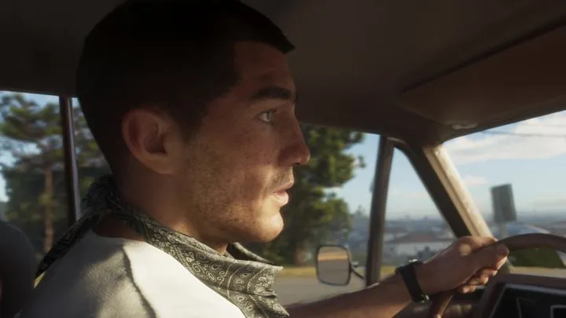

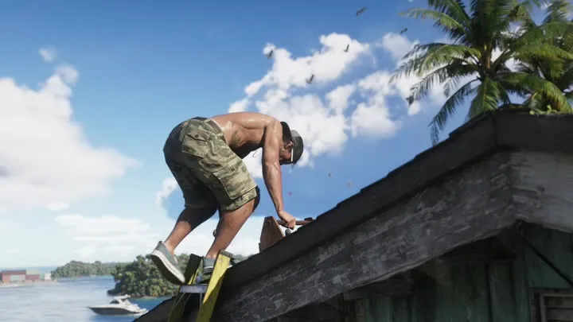
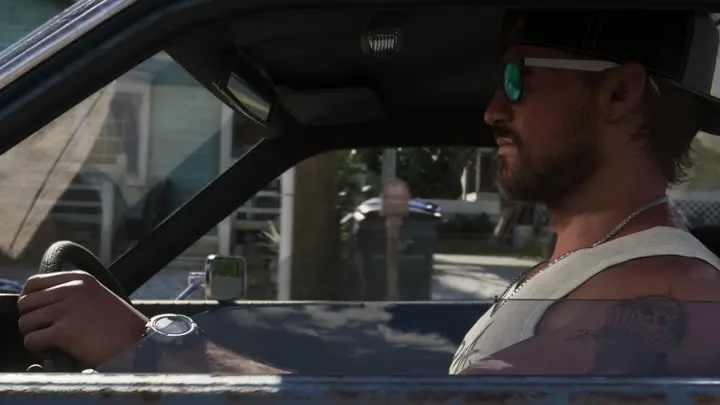
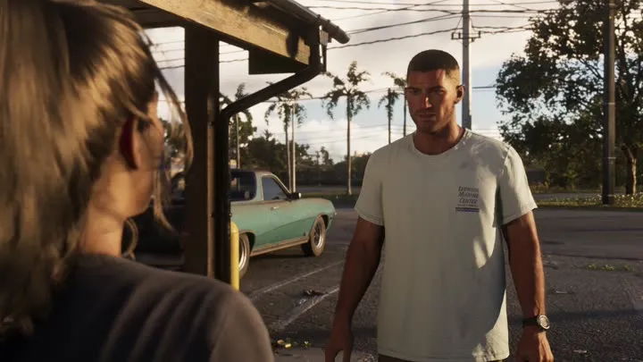
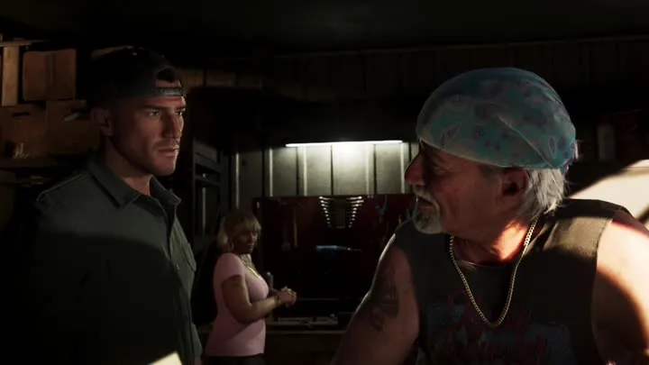
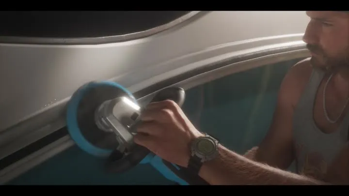
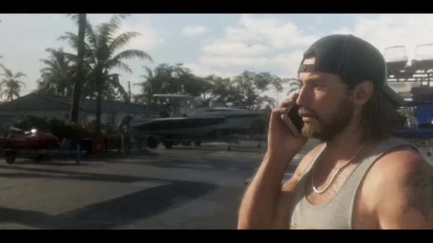
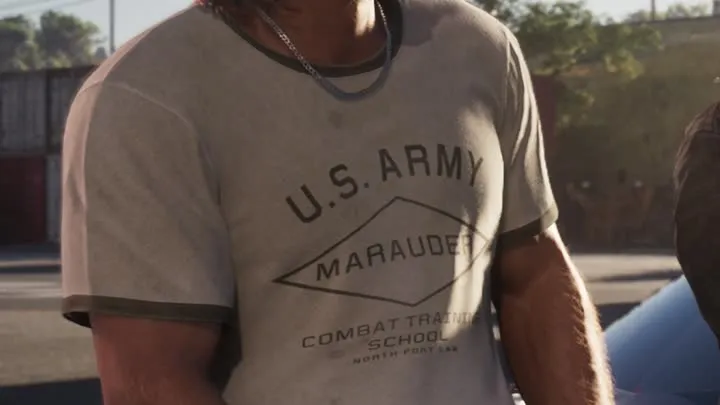
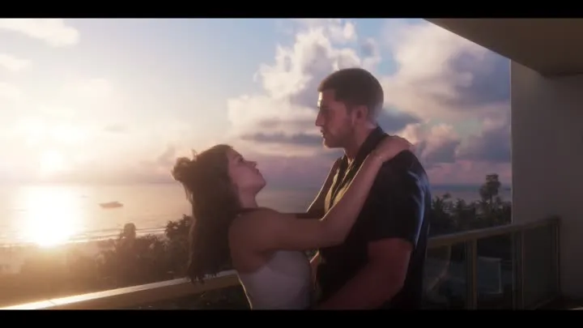
Официальные кадры

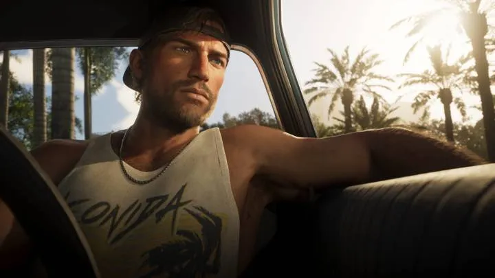
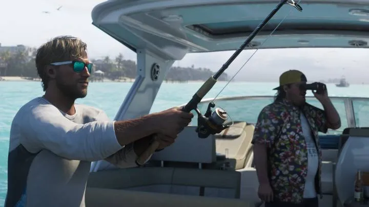
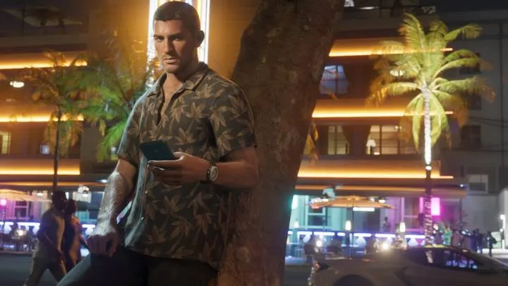
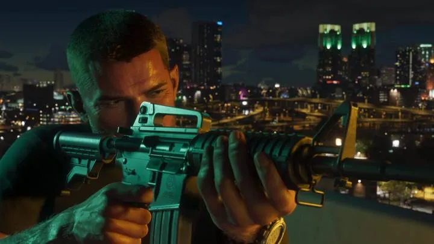
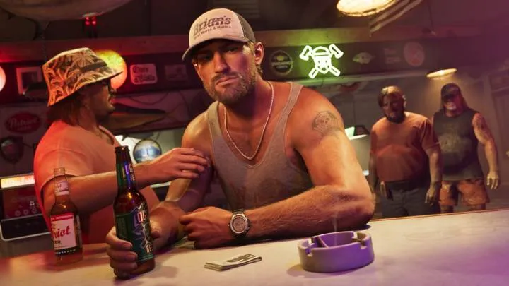
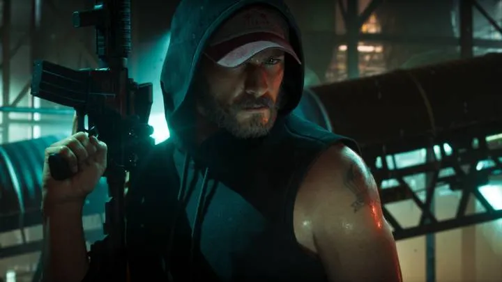
Связи с другими персонажами
- Лусия Каминос — партнёрша и напарница
- Брайан Хедер — «арендодатель» и наниматель
- Кэл Хэмптон — друг, тоже человек Брайана
Что пока неизвестно
- Возраст, родной город и подробности армейской службы Rockstar не называла.
- Чем закончится история с Лусией, узнаем только в игре.
- Надписи на футболке (MARAUDER, COMBAT TRAINING SCHOOL) Rockstar не поясняла — связь с реальным отрядом «Мародёры Меррилла» пока только наша трактовка.
После выхода игры 19 ноября 2026 года дополним страницу сюжетом и миссиями — без спойлеров в начале.
Джейсон Дюваль и реальность

 vs
vs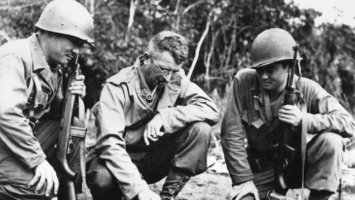
vs
 vs
vs
 vs
vsЧастые вопросы
Можно ли играть за Джейсона?
Да. Джейсон — один из двух главных героев GTA 6, второй — Лусия Каминос.
Где живёт Джейсон?
В Leonida Keys — игровой версии Флорида-Кис. Он бесплатно живёт в одном из домов контрабандиста Брайана Хедера.
Чем занимается Джейсон?
По описанию Rockstar, работает на местных наркокурьеров в Кис, а для Брайана помогает с «разборками».
Служил ли Джейсон в армии?
Да, Rockstar прямо пишет, что после неспокойной юности он отслужил в армии.
Источник: Rockstar Games — официальная страница персонажа на rockstargames.com/VI (перевод Blip Guides), трейлеры 1–3. Изображения: Rockstar Games.
Каждый день — одно сравнение: кадр игры рядом с реальным фото. Подписывайтесь:
YouTubeInstagramTikTok